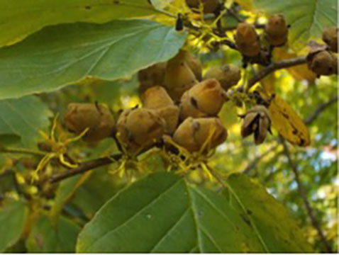
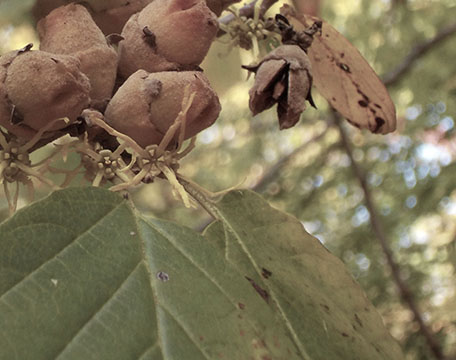
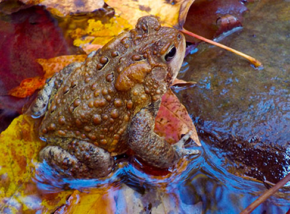

| Mini Project 1 | Mini Project 2 | Mini Project 3 | Mini Project 4 | Mini Project 5 | Mini Project 6 | Design Document | Final Website |
|---|
These photographs were altered using Photoshop. |
| Photograph by a Fifth Grade Student | ||
|---|---|---|
| Before | After | |
|  |  | |
This is a photograph one of my fifth grade students took during a photography class I teach during their 5th grade week long camp. The photograph was adjusted by first cropping the image. Next I wanted to soften the colors so I reduced the saturation levels. After I softened the cropped image I increased the % of magenta to add some warmth to the new focal point. Next I wanted to sharpen the edges of the leaves. I did this by going under filter-sharpen-sharpen edges. The final adjust I made was using color balence to adjust Cyan to Red from 0 to 16%. My overall idea was to change the focal point of the photograph and to tone down the colors and add a bit more warmth. |
||
|
| Photograph by a Fifth Grade Student | ||
|---|---|---|
| Before | After | |
|
 | |
| This is another photograph from one of my 5th grade students. As you can see I used the cropping tool again to crop out some of the background to focus more on the frog. The next change I made to the photo was use the photo filter sepia. Within the sepia filter I increased the density to 33%. I also adjusted the color balance of the midtones and the shadows. In the midtones I changed the following: Cyan-Red -28, Magenta-Green -29, Yellow-Blue -25. In the shadows I adjusted the following: Cyan-Red +22, Magenta-Green -7, Yellow-Blue +3. The goal of these adjustments was to enhance the colors and to give the image greater color depth. I also adjusted the brightness and contrast within the image. The brightness I reduced to -28 and the contrast I increased to 35. The final enhancement was to adjust the vibrance from 0 to 34 and the saturation from 0 to 34 as well. | ||
|
| Mark Vance |
| University of Akron |